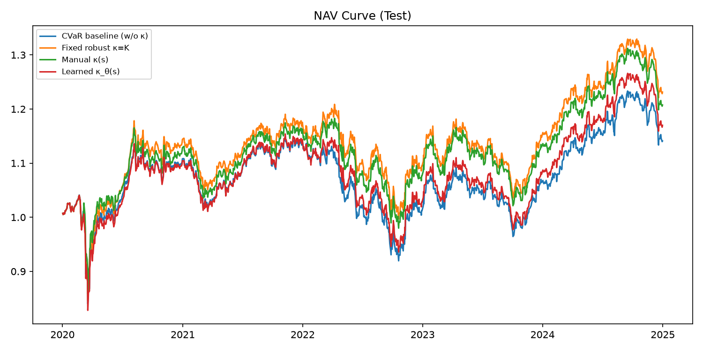
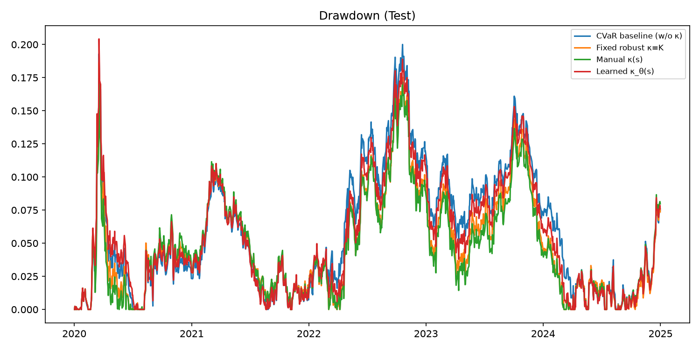
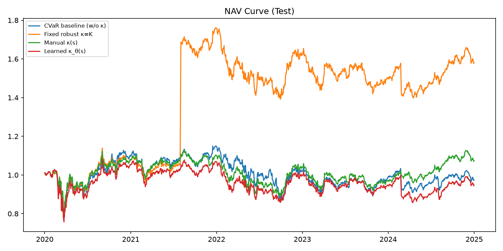
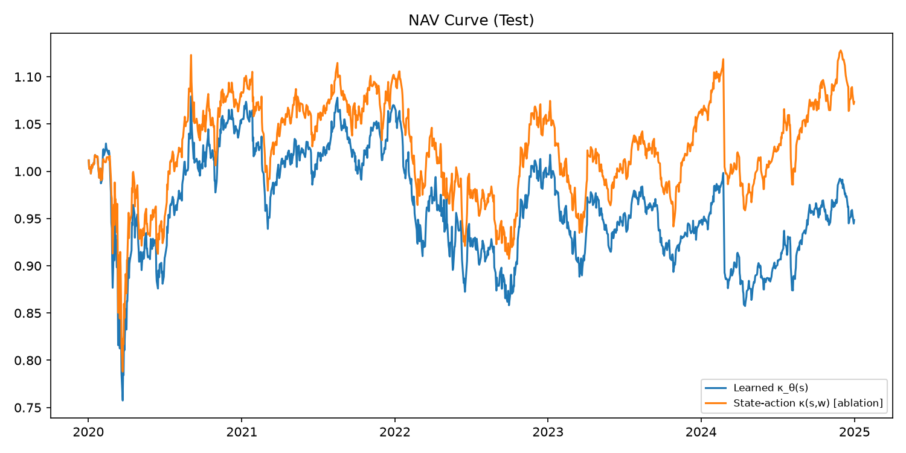

本文档从研究视角梳理数学模型、设计逻辑与实验结论。与 codeimprove.md（工程实现手册）区分：后者记录代码结构、复现命令与文件索引；本报告侧重为什么这样建模、实验说明了什么、论文如何写。
本项目基于 Ni & Lai (2024) 的 Robust Risk-Sensitive RL with CVaR。原文在有限 GridWorld RMDP 中研究：
\[ \min_\pi \max_{\tilde P\in\mathcal P} \mathrm{CVaR}_\alpha\Big(\sum_t \gamma^t C(x_t,a_t)\Big) \]核心机制是 ambiguity budget \(\kappa\)：允许 worst-case 尾部权重在样本间重新分配。本文不是继续 GridWorld 复现，而是将该思想迁移到真实股票/ETF 动态组合。
代码实现了一条完整科研流水线，分两个阶段：
| 阶段 | 目标 | 状态 |
|---|---|---|
| V1 | 数据 → RCVaR 层验证 → Rolling A/B/C/D → Baseline → RL 初版 | ✅ 完成 |
| V2 | Risk Measure Learning 框架；ETF10/ETF20/SP30 跨市场消融 | ✅ 完成 |
主贡献定位（V2）：提出并验证状态依赖的风险度量学习——市场越 stress（高波动、高回撤等），\(\kappa(s)\) 越大，RCVaR 对尾部越保守。主实验用 Rolling 优化，不用 RL。
\(N\) 个资产，日收益 \(r_t\in\mathbb R^N\)，权重 \(w_t\in\Delta^N\)（单纯形）。组合毛收益 \(R^p_{t+1}=w_t^\top r_{t+1}\)。换手率 \(\|w_t-w_{t-1}\|_1\)，成本率 \(c\)，净收益：
\[ R^{\mathrm{net}}_{t+1} = w_t^\top r_{t+1} - c\|w_t-w_{t-1}\|_1 \]优化与评价统一使用净损失（不是收益右尾）：
\[ \boxed{L_{t+1}(s_t,w_t) = -w_t^\top r_{t+1} + c\|w_t-w_{t-1}\|_1} \]给定 \(B\) 个损失样本 \(Z_1,\ldots,Z_B\)，\(\alpha=5\%\) 时：
\[ \mathrm{CVaR}_\alpha(Z) = \max_{q\in\mathcal Q_\alpha}\sum_{i=1}^B q_i Z_i,\quad \mathcal Q_\alpha = \Big\{q\ge0:\ \sum_i q_i=1,\ 0\le q_i\le\frac{1}{\alpha B}\Big\} \]实现：按 \(Z_i\) 从大到小排序，对每个样本分配权重，上限为 \(\kappa_i/(\alpha B)\)，直到总权重为 1。
| 设定 | 含义 |
|---|---|
| \(\kappa_i=1\) | 退化为普通 CVaR |
| \(\kappa_i=K\) 常数 | Fixed Robust CVaR，等价于更保守的 \(\mathrm{CVaR}_{\alpha/K}\) |
| \(\kappa_i=\kappa(s_i,w_i)\) | 状态/动作依赖鲁棒 CVaR（本文创新） |
V2 状态向量（rolling 标准化后）：
\[ s_t = \big(\widetilde{Vol}_t,\ \widetilde{DD}_t,\ \widetilde{Mom}_t,\ \widetilde{Corr}_t\big) \]主方法 C（manual κ）：
\[ \kappa(s_t) = 1 + \kappa_{\max}\cdot\sigma\big(\beta_1\widetilde{Vol}_t+\beta_2\widetilde{DD}_t+\beta_3\widetilde{Mom}_t+\beta_4\widetilde{Corr}_t\big),\quad \kappa_{\max}=1 \]故 \(\kappa\in[1,2]\)：市场 stress 越高，尾部样本在 worst-case 分布中可获更高权重 → RCVaR 更保守。
D 模型（消融）在 C 基础上加入组合集中度 \(\mathrm{Conc}(w)=\sum_i w_i^2\)。
每个调仓日 \(t\)，用过去 \(M=252\) 日历史，求解：
\[ \boxed{w_t^* = \arg\min_{w\in\Delta^N}\ \mathrm{RCVaR}_{\alpha,\kappa}\Big(\{-w^\top r_\tau + c\|w-w_{t-1}\|_1\}_{\tau=t-M}^{t-1}\Big)} \]权重通过 softmax 参数化保证 \(w\in\Delta^N\)；调仓频率：每月末；样本外测试：2020–2024。
V1/V2 实验表明：Rolling + κ(s) 已能给出可写论文的尾部风险控制结果；当前 RL 仅为快速验证，未超过 Rolling。
| 模型 | κ | 要回答的问题 |
|---|---|---|
| A | 1（无鲁棒） | baseline：普通 CVaR 组合 |
| B | 2（固定） | 固定 ambiguity 是否已有帮助？ |
| C_manual | κ(s) | 状态依赖风险度量是否最优？（主方法） |
| C_learned | κθ(s) | 能否从 val 数据学习 θ？ |
| D | κ(s,w) | 动作依赖是否带来额外 tail 控制，还是噪声？ |
数据：akshare stock_us_daily；划分 train 2010–2017 / val 2018–2019 / test 2020–2024。
以下按研究功能描述，而非文件路径清单（详见 codeimprove.md）。
| 层 | 功能 | 对应数学对象 |
|---|---|---|
| 数据层 | akshare 下载、对齐、划分 train/val/test | \(r_t\) |
| 状态层 | Vol, DD, Mom, Corr + rolling z-score | \(s_t\) |
| 风险度量层 | κ(s) 或 κ(s,w)；RCVaR 对偶求解 | \(\kappa\), \(\mathrm{RCVaR}\) |
| 组合优化层 | 每月 min-w RCVaR，softmax 权重 | \(w_t^*\) |
| 回测层 | NAV、MDD、CVaR、危机期损失 | 样本外指标 |
| 消融层 | A/B/C/D 五模型 × 三数据集 | 论文 Table/Figure |
| RL 层（非主线） | PPO + RCVaR 目标，快速验证 | future work |
另：robust_cvar_repro/ 保留 Ni & Lai GridWorld Figure 1 复现，与组合实验独立。
辅助指标：MDD、VaR5%、Sharpe、Sortino、Calmar；危机期子样本（2020 Q1–Q2、2022 全年）损失。
| 参数 | 取值 |
|---|---|
| \(\alpha\) | 0.05 |
| \(\kappa_{\max}\) | 1（κ∈[1,2]） |
| Fixed K（模型 B） | 2 |
| 估计窗口 M | 252 日 |
| 交易成本 c | 0.001 |
| 调仓 | 每月末 |
Equal Weight、Min Variance（同样 test 期），用于说明 RCVaR 相对传统方法在尾部的优势。
Test 2020–2024，单位：日净损失比例。
| 模型 | ETF10 | ETF20 | SP30 | 解读 |
|---|---|---|---|---|
| A 无 κ | 1.67% | 2.17% | 2.78% | baseline |
| B 固定 κ=2 | 1.65% | 2.19% | 2.60% | 固定鲁棒有效 |
| C_manual κ(s) | 1.63% | 2.20% | 2.50% | ETF10/SP30 最优 |
| C_learned κθ(s) | 1.69% | 2.19% | 2.71% | 弱于 manual |
| D κ(s,w) | 1.65% | 2.19% | 2.61% | 非主线消融 |
| 模型 | CVaR5% | MDD | 年化收益 | Sharpe | 2020危机损失 |
|---|---|---|---|---|---|
| C_manual | 1.63% | 17.5% | 3.85% | 0.34 | 1.79% |
| B_fixed | 1.65% | 18.6% | 4.26% | 0.37 | 3.02% |
| D | 1.65% | 18.5% | 4.56% | 0.40 | 2.67% |
| A | 1.67% | 20.0% | 2.68% | 0.23 | 4.19% |
相对 A：C_manual 的 CVaR ↓2.4%，MDD ↓2.5pp，2020 危机损失 ↓57%。
| 模型 | CVaR5% | MDD | 年化收益 | 2022高波动损失 |
|---|---|---|---|---|
| C_manual | 2.50% | 22.2% | 1.43% | 5.88% |
| B_fixed | 2.60% | 22.3% | 9.61% | 7.70% |
| A | 2.78% | 24.8% | -0.54% | 10.8% |
C_manual 相对 A：CVaR ↓10%，2022 危机期损失 ↓45%。
| 方法 | CVaR5% | MDD | 年化收益 |
|---|---|---|---|
| C_manual RCVaR | 1.63% | 17.5% | 3.85% |
| Min Variance | 2.06% | 22.2% | 8.85% |
| Equal Weight | 2.60% | 30.3% | 10.12% |
RCVaR 方法不以最高收益为目标，但在尾部风险上显著优于传统 baseline。




| 检验 | 结果 |
|---|---|
| κ=1 ≈ 普通 CVaR | 通过（误差 < 1e-10 量级） |
| κ=2 > κ=1 | 0.0166 > 0.0128（更保守） |
conda activate portfolio python robust_cvar_portfolio/experiments/run_v2_experiment.py
工程细节、文件索引、命令参数见 codeimprove.md。
报告生成：2026-07-01 · 数据来源：robust_cvar_portfolio/outputs/v2/ · 配套工程文档：codeimprove.md